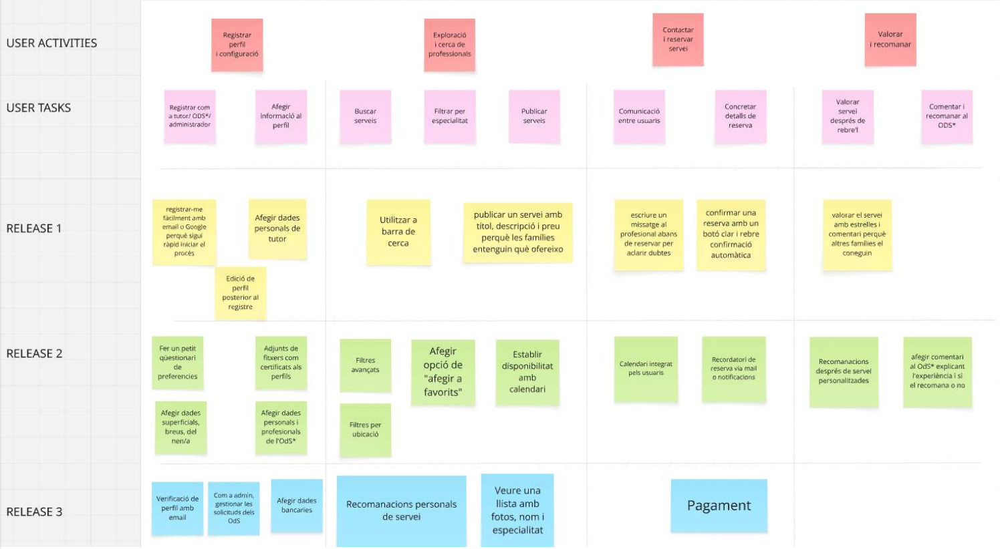

📆 Introducció als Sprints
El projecte es va dividir en 4 sprints, cadascun amb una durada de dues setmanes. Cada sprint ens ha permès avançar progressivament en el desenvolupament de KidConnect, des de la concepció fins a la seva entrega final.
🔧 Sprint 0: Fase prèvia - Preparació i Introducció
- 📚 Teoria:
- T1: Introducció a l'Enginyeria del software i Metodologies Agile
- T2: Fonaments de Scrum
- 🧱 Seminari 1: Practiquem SCRUM! Lego City
Aquest seminari va consistir en una activitat pràctica basada en la construcció d’una ciutat Lego seguint les fases del mètode SCRUM. Va estar centrat en el treball en equip, la distribució de rols (Product Owner, Scrum Master i desenvolupadors), i en millorar la comunicació dins de l’equip.
🎨 Sprint 1: Concepció i Disseny
- 📚 Teoria:
- T3: Enginyeria de requisits
- Història d'usuari
- T4: Product Canvas i Product Backlog
- 🧪 Pràctiques:
- Lab 1: Especificació de requisits: funcionals i no funcionals
✅ Requisits Funcionals
- RF-001: Registre d'usuaris (Alta)
- RF-002: Visualització de perfils (Alta)
- RF-003: Filtres de cerca (Alta)
- RF-004: Valoracions (Mitja)
- RF-005: Pagament segur (Baixa)
- RF-006: Comunicació via xat (Mitja)
- RF-007: Reserves de serveis (Alta)
- RF-008: Notificacions email/push (Mitja)
- RF-009: Verificació d'identitat (Alta)
🔒 Requisits No Funcionals
- RNF-001: Alta disponibilitat (Alta)
- RNF-002: Tolerància a fallides (Alta)
- RNF-003: Temps de resposta < 2s (Alta)
- RNF-004: Protecció de dades (Alta)
- RNF-005: Accessibilitat (Mitja)
- RNF-006: Compatibilitat multiplataforma (Alta)
- RNF-007: Compliment WCAG 2.1 (A i AA)
🚀 Sprint 2: Desenvolupament MVP i Feedback
🗺️ Lab 3: Mapa d'Històries d'Usuari
En aquest laboratori vam construir el mapa d’històries d’usuari, que ens permet visualitzar com els usuaris interactuen amb la nostra aplicació. Aquest mapa ens ajuda a definir i prioritzar funcionalitats des del punt de vista de l’usuari.
✅ Lab 4: Criteris d'Acceptació
En aquest laboratori vam definir criteris d'acceptació per cada història d'usuari. Cada criteri estableix una condició concreta que s'ha de complir perquè es consideri que la funcionalitat funciona correctament.
- US001 - Registre amb email o Google
- 🟠 Email: Donat el formulari de registre, quan s’introdueix email i contrasenya i es prem el botó, es crea el compte i es mostra un missatge de benvinguda.
- 🟢 Google: Donat el formulari de registre, quan es fa clic a "Continuar amb Google" i s’autoritza, el compte es crea i redirigeix al perfil.
- US002 - Afegir dades personals de l’ODS
- 🟠 Validació: Quan es deixa un camp requerit en blanc, es mostra un missatge d’error específic.
- 🟢 Desar: Quan el formulari és complet i es desa, les dades s’emmagatzemen i es mostren al perfil.
- US003 - Edició de perfil
- 🟠 Edició: Quan l’usuari fa clic a “Editar perfil” i modifica camps, els canvis es reflecteixen immediatament.
- 🟢 Confirmació: Quan es desa la informació, es mostra un missatge de confirmació.
- US004 - Barra de cerca
- 🟠 Resultats: Quan es fa una cerca amb paraula clau, es mostra una llista de serveis relacionats.
- 🟢 Sense coincidències: Quan no hi ha resultats, es mostra un missatge indicant-ho.
- US005 - Publicar un servei
- 🟠 Camps requerits: Quan es deixa un camp en blanc, es mostra un missatge d’error.
- 🟢 Publicació: Quan totes les dades són completes, el servei apareix a les cerques.
- US006 - Enviar missatge abans de reservar
- 🟠 Validació: Quan s’intenta enviar amb el camp buit, es mostra un error.
- 🟢 Recepció: El professional rep una notificació quan el missatge és enviat.
- US007 - Confirmar una reserva
- 🟠 Botó: Quan es visualitzen els detalls, apareix un botó de confirmació actiu.
- 🟢 Confirmació: En fer clic, el sistema confirma i envia notificació a les dues parts.
- US008 - Valorar el servei
- 🟠 Estrelles: Quan s’escull entre 1 i 5 estrelles, la puntuació es registra.
- 🟢 Comentari: Si es redacta un comentari i es publica, apareix al perfil del professional.
💻 Sprint 3: Implementació i Desplegament
- ⚙️ DevOps:
- Introducció i pràctiques amb pipelines
- Treball col·laboratiu en equip
- 🤖 Lab 6: Enginyeria de Prompts amb GitHub Copilot
En aquest laboratori, vam realitzar una pràctica centrada en l’Enginyeria de Prompts. L’activitat consistia a escollir un dels quatre temes proposats i desenvolupar una pàgina web en HTML utilitzant GitHub i GitHub Copilot. L’objectiu era experimentar amb la generació de codi a través de la redacció de prompts precisos i efectius, millorant així la nostra capacitat per treballar amb assistents d’IA.
🏁 Sprint 4: Entrega Final
En l’últim sprint del projecte, ens hem centrat en finalitzar el desenvolupament de l’MVP de KidConnect. Això ha inclòs:
- 🔧 Polir i corregir errors del frontend i backend.
- 🧪 Realitzar proves de les funcionalitats implementades per assegurar la seva fiabilitat.
- 📄 Preparar la presentació final del projecte mitjançant una pàgina HTML que resumeix visualment totes les fases, decisions i resultats del projecte.
Ha estat una fase de síntesi on hem pogut veure l'evolució del projecte des de les primeres idees fins a un producte real funcional i presentable.